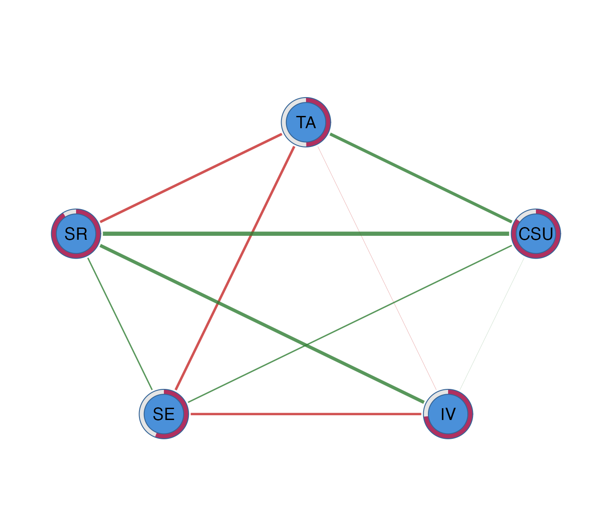
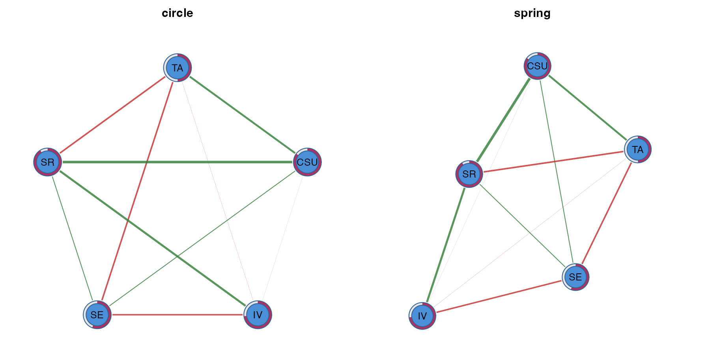
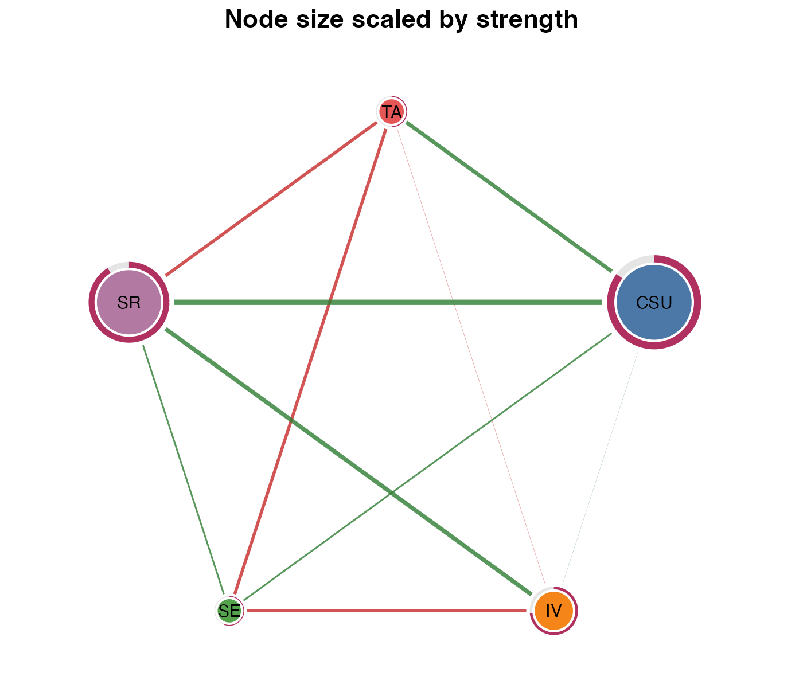
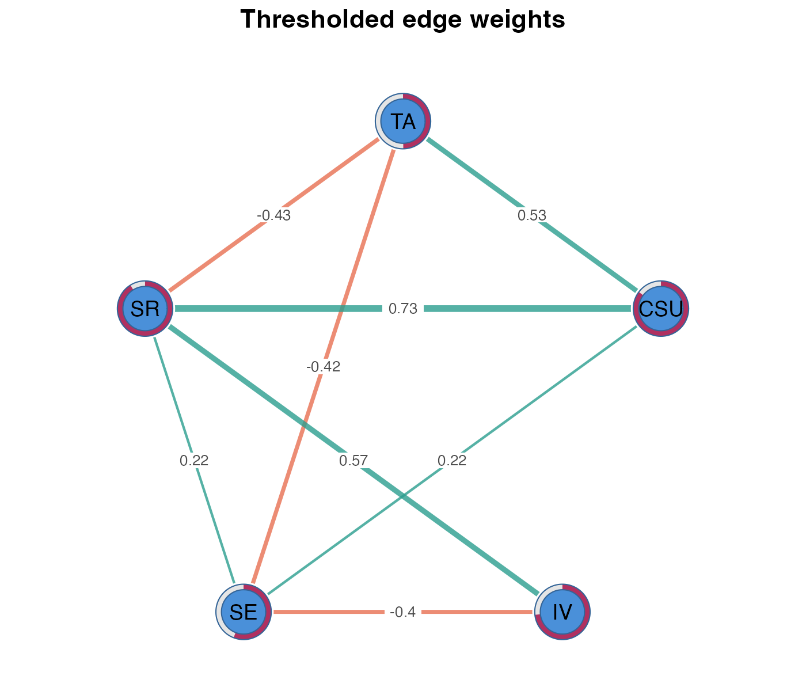
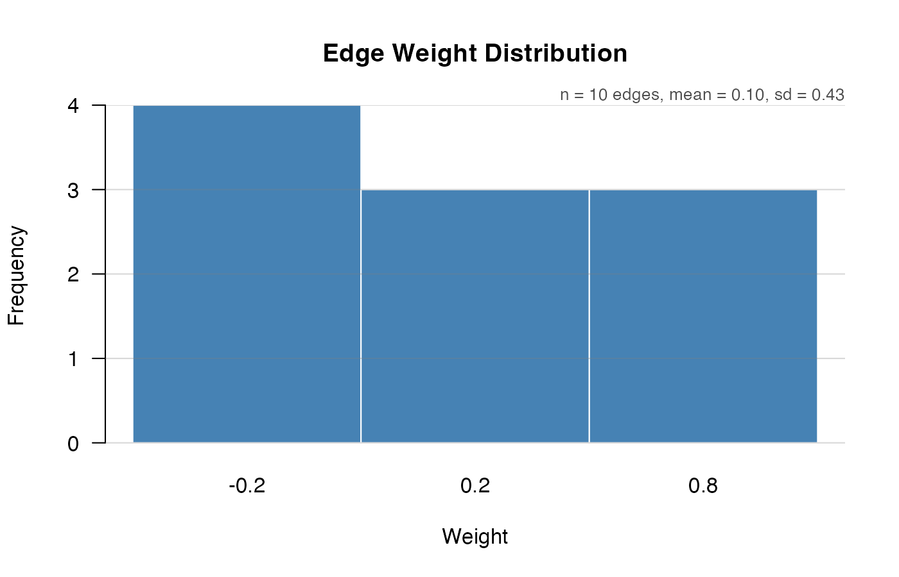
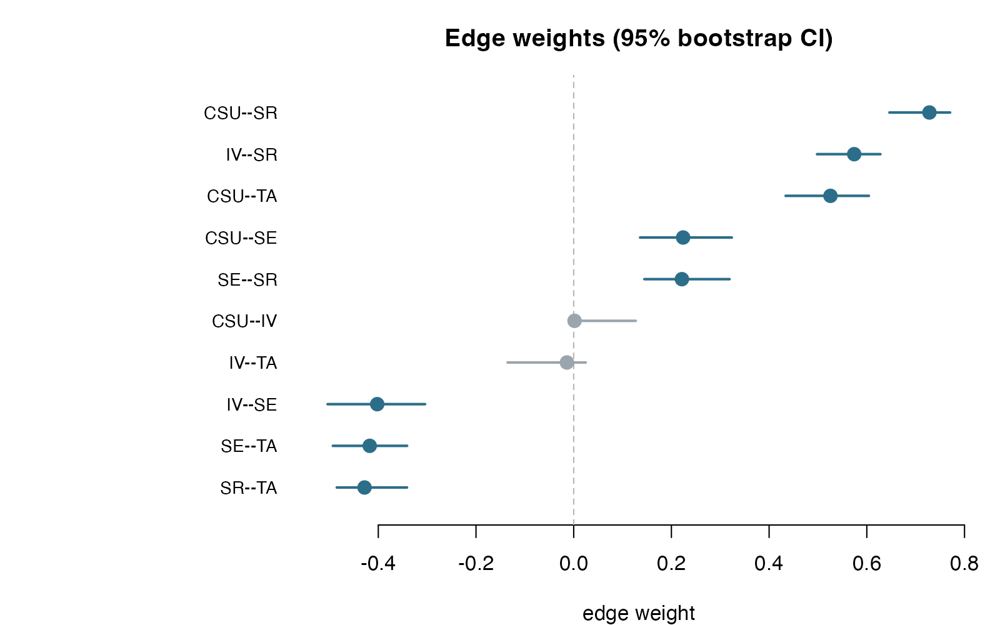
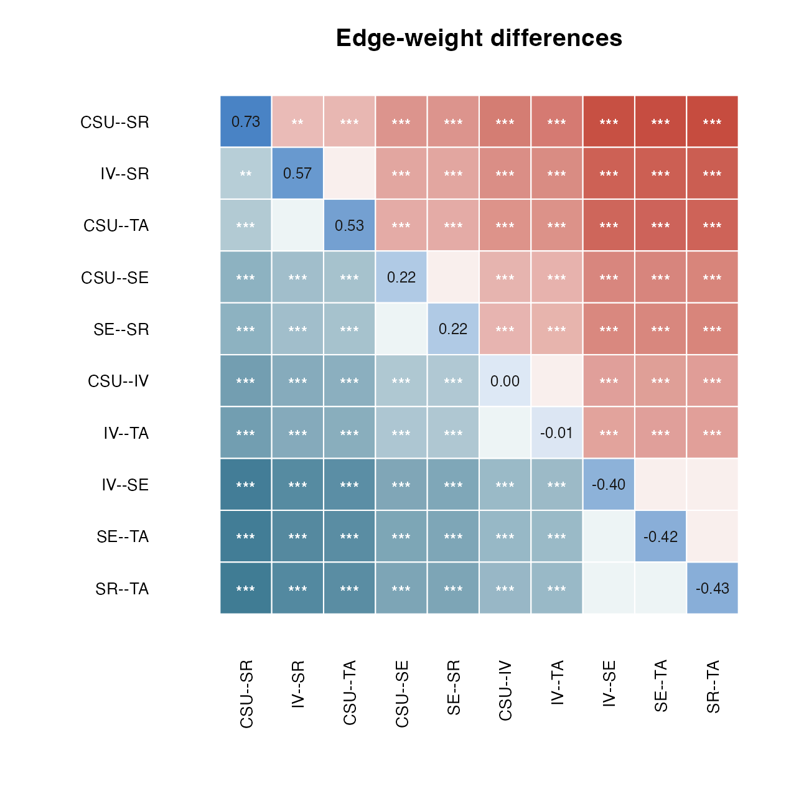
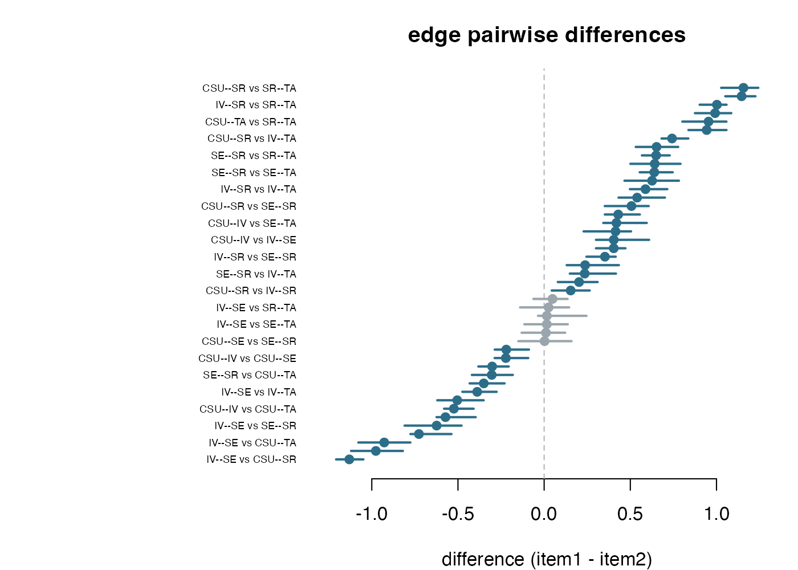
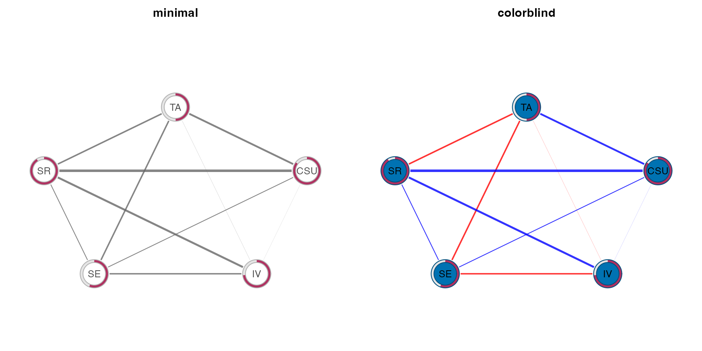
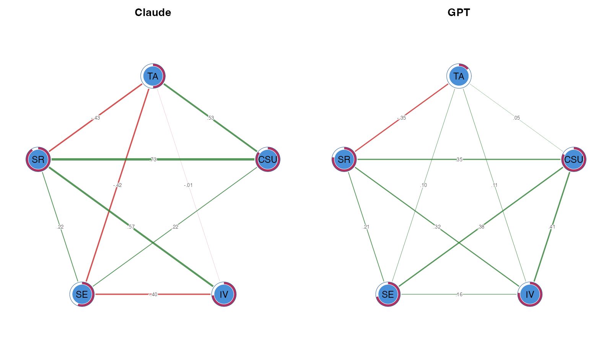

Visualizing networks with cograph
Source:vignettes/visualizing-with-cograph.Rmd
visualizing-with-cograph.Rmdpsychnets belongs to the Dynalytics ecosystem: a
framework for the rigorous analytics of dynamical systems. Dynalytics
treats estimation, confirmatory testing, analysis, and software as parts
of one scientific contract: every analytical claim should be matched by
evidence appropriate to the structure and complexity of that claim.
Within that contract, psychnets covers psychological
networks with clean-room, base-R estimators, correctness certificates,
tidy network objects, and framework verbs for centrality,
predictability, bootstrapping, stability, and group comparison.
cograph is the visualization layer for this ecosystem.
It is built for fast, customizable network graphics across dynamical,
social, psychological, heterogeneous, and multilayer networks. A fitted
psychnets object can therefore move directly into
cograph without conversion: the same model can be rendered
with different layouts, themes, node shapes, centrality-scaled sizes,
signed-edge colors, thresholds, edge labels, group panels, and export
settings. This vignette shows that plotting workflow from the default
graph to publication-oriented figures.
Fit Once
fit <- ebic_glasso(SRL_Claude)
fit
#> <psychnet> glasso network
#> nodes: 5 edges: 10 (undirected)
#> lambda: 0.009013 gamma: 0.5
#> optimality (KKT residual): 3.92e-10Default cograph Plot
plot(fit)
The explicit splot() call is useful when you want to set
plotting parameters:
cograph::splot(fit)
Layouts
The same network can be drawn with different layouts. Fixed seeds make stochastic layouts reproducible.
op <- par(mfrow = c(1, 2), mar = c(1, 1, 3, 1))
cograph::splot(fit, layout = "circle", title = "circle")
cograph::splot(fit, layout = "spring", seed = 11, title = "spring")
par(op)Nodes and Labels
Node aesthetics can be set directly: fill, border, label size, and shape. Scaling node size by a centrality measure makes the structural role of each node visible.
cograph::splot(
fit,
layout = "circle",
scale_nodes_by = "strength",
node_size_range = c(4, 12),
node_fill = c("#4C78A8", "#F58518", "#54A24B", "#B279A2", "#E45756"),
node_border_color = "white",
node_border_width = 2,
label_size = 0.9,
title = "Node size scaled by strength"
)
Edges
For signed psychometric networks, edge color and width usually matter more than decorative node styling. Thresholding and edge labels help when the complete network is too dense.
cograph::splot(
fit,
layout = "circle",
threshold = 0.05,
edge_width_range = c(0.5, 5),
edge_positive_color = "#2A9D8F",
edge_negative_color = "#E76F51",
edge_labels = TRUE,
edge_label_size = 0.7,
edge_label_bg = "white",
title = "Thresholded edge weights"
)
The edge-weight distribution can be inspected separately:
cograph::plot_edge_weights(fit)
Bootstrap and Edge Differences
Bootstrap diagnostics are estimated by psychnets. The
default plot shows edge-weight confidence intervals.

The same bootstrap object also contains the retained draws used for pairwise edge-difference tests.
plot(bs, type = "edge_diff")
Use the forest style when the effect sizes and confidence intervals matter more than the significance-box display.
plot(difference_test(bs, type = "edge"), style = "forest")
Themes
Themes apply coordinated defaults without changing the fitted model.
op <- par(mfrow = c(1, 2), mar = c(1, 1, 3, 1))
cograph::splot(fit, theme = "minimal", title = "minimal")
cograph::splot(fit, theme = "colorblind", title = "colorblind")
par(op)Group Networks
psychnet(..., group = ) returns a collection of fitted
networks. cograph plots the collection as a shared-layout
grid, so node positions are comparable across groups.
group_fit <- psychnet(grouped_srl, group = "source", method = "glasso")
cograph::splot(group_fit, layout = "circle", psych_styling = TRUE)
Export
Use filename, width, height,
and res when a figure is ready to save:
cograph::splot(fit, layout = "circle", filename = "network.png",
width = 8, height = 8, res = 300)Useful splot() Options
| Task | Arguments |
|---|---|
| Layout |
layout, seed, layout_scale,
layout_margin
|
| Nodes |
node_size, scale_nodes_by,
node_size_range, node_fill,
node_shape
|
| Labels |
labels, label_size,
label_color, label_position
|
| Edges |
edge_width_range, edge_positive_color,
edge_negative_color, edge_alpha
|
| Filtering |
threshold, minimum,
maximum
|
| Edge labels |
edge_labels, edge_label_size,
edge_label_bg, edge_label_style
|
| Themes |
theme, background, title
|
| Export |
filename, width, height,
res
|